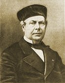

Aristide
CAVAILLÉ-COLL.

|
Aristide CAVAILLÉ-COLL. |
|
|  |
|
|
|
Aristide CAVAILLÉ-COLL. |
- Aristide Cavaillé-Coll (1811-1899). Très beau site hébergé sur le serveur du ministère de la culture qui établit une biographie particulièrement complète du facteur et de son entourage familial, musical et politique. Des extraits sonores et vidéos sont disponibles et la mise en page est à la hauteur de l'abondance documentaire.
- De façon plus abrégée - mais toutefois fort complète - il ne faut pas manquer de lire le texte signé par Loïc Métrope sur le site Musica et Memoria qui récapitule, en une page web, la vie du grand homme.
- On peut aussi trouver une page assez fournie au sein du site « Les orgues en Haute Normandie » de Benoît Lecoq qui, outre une brève biographie, consacre une large part à l'apport de ce facteur dans cette région précise.
- Ou enfin, mais de façon plus généraliste, le site de l'Association Aristide Cavaillé-Coll.
- Études expérimentale sur les tuyaux d'orgues. (1840)
- De la détermination du ton normal ou du diapason pour l'accord des instruments de musique. (1859).
- De la détermination des dimensions des tuyaux d'orgues par rapport à leur intonation. (1860).
- Soufflerie de précision munie d'un nouveau système de régulateurs ; application à des expériences d'acoustique. (1863).
- De l'orgue et de son architecture. (1856 - 2e édition 1872).
- Notice et rapport sur l'orgue monumental projeté pour la Basilique de Saint-Pierre de Rome. (1872).
- Projet d'Orgue Monumental pour la Basilique de Saint-Pierre de Rome.(1875 - pages 28 à 46).
- Une page sur les plaques de signatures des consoles d'Aristide Cavaillé-Coll.